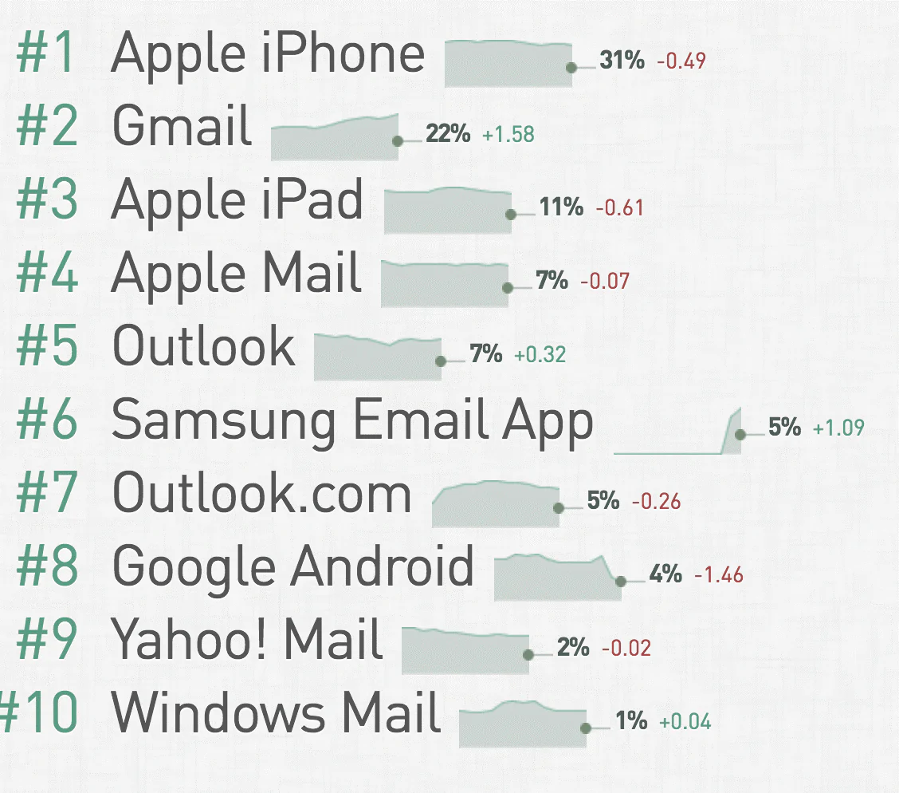

Розкажемо про особливості верстки email шаблонів — у чому основні проблеми верстки, як працювати з мультимедіа, шрифтами та адаптивністю. І все це із прикладами коду.
Розробники проекту Email Client Market Share відслідковують статистику по частці ринку e-mail серед різних поштових клієнтів. У разі конкретної компанії розподіл користувачів різних платформ та програм може бути іншим, але на старті непогано розуміти базову диспозицію на ринку. За даними на травень 2017 року, найпопулярнішими поштовими платформами є iPhone та Gmail:
Якщо компанія вирішить не використовувати існуючі на ринку рішення для створення шаблонів розсилок, то її фахівцям доведеться розібратися з питаннями верстки листів — і в разі електронної пошти це може бути складніше, ніж створити сторінку на сайті.
Поштові клієнти додають власні стилі, крім тих, що були спочатку обрані розробником розсилки. Наприклад, Gmail для всіх шрифтів у ‹td› встановлює значення. Також розробники поштового сервісу Google лише недавно анонсували підтримку вбудованого CSS та media queries.
Різноманітність поштових клієнтів та движків рендерингу призводить до необхідності використання універсальних підходів. Зокрема, це означає, що замість використання «div» краще застосовувати табличну верстку. Конкретно, це виливається у користування:
‹table› вместо ‹div›#FFFFFF вместо #FFF,paddingвместо margin,background-color вместо background, также стоит использовать расширенные свойства, вроде padding-top;, padding-left; и другие,‹img›,‹style›Використовуйте стандартні системні шрифти для відображення текстів листів – це найпростіше та найнадійніше рішення. Але якщо потрібно внести зміни до типографіки, можна використовувати веб-шрифти, наприклад, Google Fonts.
Наступна важлива тема при верстці листів – робота із зображеннями та медіа.
Деякі поштові програми за промовчанням показують зображення, а деякі їх блокують. Крім того, це впливає на можливість збору статистики. Як правило, для цього використовуються спеціальні картинки малого розміру – пікселі відстеження. Це означає, що якщо поштова програма блокує зображення, то зрозуміти, чи відкрив користувач лист просто не вдасться.
Поведінка поштових клієнтів тут дуже варіативна:
Важно включать alt-текст для всех используемых картинок — это поможет получателю письма понять, что должно было быть на месте изображений, если его email-клиент вдруг ему их не покажет. Для тега‹img›можно прописать стилевые правила текста, например colorили font-family, которые будут применяться к alt-тексту.
Гифки поддерживаются большинством почтовых клиентов
Цифри говорять про те, що потрібно приділяти особливу увагу тому, як листи відображаються на різних мобільних пристроях.
Існує два основні види листів для мобільних пристроїв - одноколонні та багатоколонні. У першому випадку особливих складнощів для того, щоб зробити контент адаптивним, не виникає, оскільки немає необхідності в реорганізації елементів листа. Необхідно лише забезпечити зменшення ширини шаблону для кращого відображення на пристроях різного розміру.
Для обеспечения корректного изменения размера, нужно адаптировать ширину таблицы. Выше мы говорили о том, что в сфере email до сих пор в ходу табличная верстка
Пам'ятайте, що реалізація верстки email-писем може бути вимогливою, і слід завжди дотримуватися найкращих практик для забезпечення коректності відображення на різних пристроях та платформах.